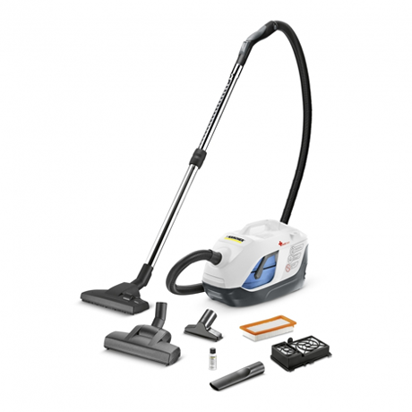

пылесос с водяным фильтром
Высочайшая сила всасывания и многоступенчатая система фильтрации, реализованная в пылесосе DS 6000 Mediclean, делают воздух в помещении до 99,99% чище. Аллергики
могут вздохнуть спокойно! Пылесос с аквафильтром DS 6.000 Mediclean рекомендован Российской Ассоциацией Аллергологов и Клинических иммунологов (РААКИ).

В наличии
Karcher DS 6.000 Mediclean
new
хит
21 190
руб.
Подробные условия доставки и оплаты
Гарантия на бытовую технику 5 лет!Качественная чистка полов, ковровых покрытий и мягкой мебели. Благодаря дополнительному фильтру HEPA 13 очищается воздух в помещении от мелких частиц пыли, спор и пыльцы, вызывающих аллергию, а система Perma Power увлажняет его. Легкий, удобный в эксплуатации. Рекомендован для использования в медицинских учреждениях.
Артикул: 1.195-202.0